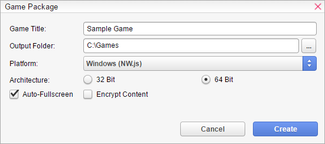
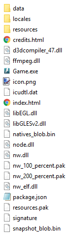

HTML
Once you finish your game, you are now ready to share it to the world!

General
Game Title- The game's title.
Output Folder -The folder where the package will be saved.
Platform- The target platform you want to export the game for.
Architecture -Create a game package for specific computer architectures. This setting is ignored for Web and Mobile platforms.
Auto-Fullscreen- If checked, the game will start at fullscreen. This setting is ignored for Web and Mobile platforms.
Encrypt Content -If checked, the game's contents will be encrypted.
Game Package Structure
Once your game package has been successfully created, you can find it at the selected location. The file structure of the game package depends on the platform you have selected. If you want to take control over the package-structure, checkBuild & Runsection. The following example shows the file structure of a default Windows package.

You can start the game by executing the Game.exe file. You don't need to know much about all that .dat, .dll, .bin or .pak files. They are part of the Runtime (NW.js) used for to play VN Maker Games on Windows. It is only important that you ship them all out.
However, here is a quick overview about the other files.
Game.exe
Execute this file to play your game. However, that file doesn't store any game data or something. It just launches the runtime. It is important that you ship out ALL files in the folder and not only the Game.exe file.
index.html
This is the entry point of your game. It is an HTML file because at the time of writing, VN Maker uses HTML5 technology for all supported platforms.
package.json
That file is specific or Windows, Linux and Mac OS X packages. It regular it is not necessary to touch this file. But if you want, you can setup some special settings for the NW.js Runtime. SeeNW.js Documentationfor more information.
icon.png
The icon which is used for your game window. It doesn't affect the icon of the Game.exe/Game.app. If you want to change that icon, for Windows you can use tools such as Resource Hacker to replace the icon with a custom one.
signature
This file is important if you make your game public. In VN Maker, all games are digitally signed. You can imagine that signature as a certificate that your game was created with a legal version of VN Maker and that the content of your game has not been changed/hacked.
data
Contains all the data files of your game
resources
Contains all resources of your game